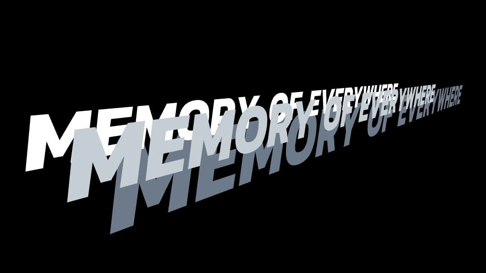

Memory of Everywhere

"Memory of everywhere" is a textual artificial organism that performs a reading and writing exercise using video input from around the globe and a generative language model trained on 19th-century travel literature. The work focuses on the notion of travel, journey, discovery, and cognition.
The work arises from a need to comprehend a series of chaotic experiences while traveling to more than 45 countries and 1,723 flight hours with a social robot.
To make sense of the speed and heterogeneity of these episodes, I trained a writing system to explain to me what it thought it was happening.
The system articulates two structures: a convolutional neural network using mobile vision and a long short-term memory (LSTM) architecture of recurrent neural network (RNN).
The work is also an experiment around an endless writing that tries to understand a world constituted by limited objects and perceptions, perhaps a reflection of our own cognitive operations.
Machine Learning / Experimental Literature / Live Installation
Machine Learning, convolutional neural network, mobile vision, long short-term memory (LSTM), projection, XIX century travel literature corpus, travel videos.
Exhibitions
- (Un)Continuity. Electronic Literature Organization. UCF Gallery, Orlando, USA, 2020.
- Neologías Artificiales: arte con inteligencia artificial, Linne Magazine